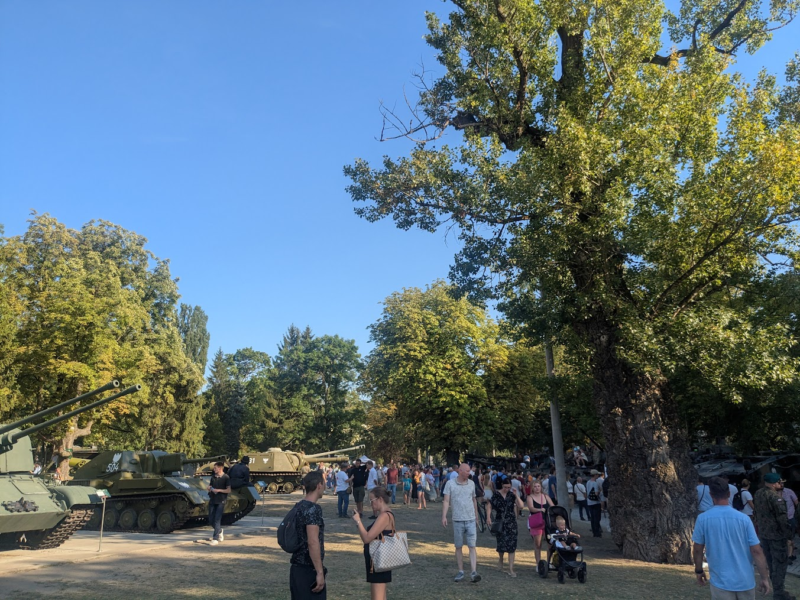
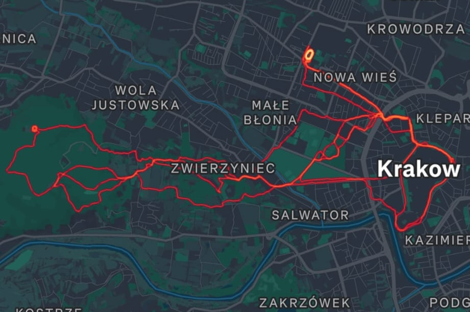
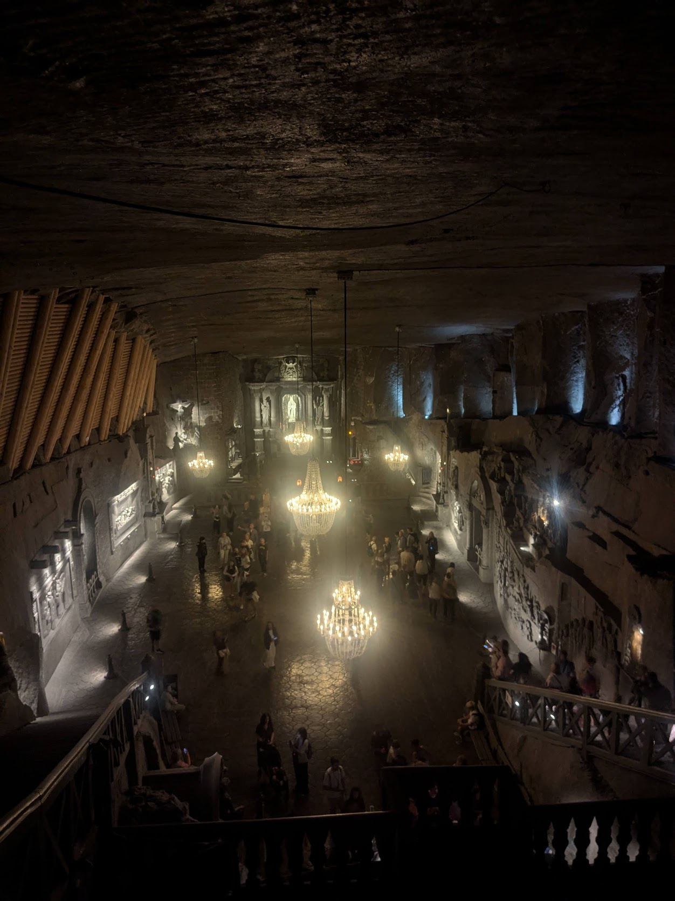

EuroPython and EuroSciPy 2025
Patrick J. Roddy
2025-11-18
Scan to view the slides
EuroPython
14th-20th July 2025
Weekend Before üò¥
Flight
The Conference
- 24th EuroPython
- 7 days (2 tutorial, 3 talk, 2 sprint)
- 1300+ attendees
- 180+ speakers
- Retro gaming station
- Two socials
- Beginners day
- Summits: (WASM, C-API, Rust, Packaging)
Tutorials
- GIL-free Python and the GPU: hands-on experience
- The Mighty Dot - Customize Attribute Access with Descriptors
- Accelerating Scientific Python: JAX, Numba, and Ray in Action
Talks – Highlights
- Myths and fairy tales around Python performance
- Typing at scale: statically type-checking a large codebase
- Why it took 4 years to get a lock files specification
- Snapshot Testing: A New Era of Reliability
- End to End with Testcontainers and Playwright
Talks – Highlights
- What comes after Rust in the Python ecosystem?
- What does = do?
- Python Config That Will Give You Chills (In a Good Way, I Promise!)
- “Python: the Documentary” screening and Q&A
Sprints
- In conjunction with a beginners day.
- Wanted to contribute to a bigger project.
- Worked on Apache Arrow on adding typing to the Python bindings.
- Tried out astral-sh/ty.
- Early prototype.

Running
Tried and failed to script this up üòû‚Ķ
Photos

Summary - Prague
- Been once before to watch Cyclo-cross World Championships.
- Beautiful, especially all the pastel houses.
- Pretty good for running.
- Meant to be warm in summer ü•∂.
- Plenty to do if not at a conference.
- Nice to wonder around at night.
- Good food scene (especially dumplings/beer).
Summary - EuroPython
- Massive conference.
- Many recurring attendees.
- Many big cohorts in attendance - could be hard to meet people.
- The community felt somewhat insular.
- Talks in general of high quality.
- Had to arrive early to attend some talks.
- Sprints well attended.
EuroSciPy
18th-22nd August 2025
Flight
Photos – Warsaw



Train
The Conference
- 17th EuroSciPy
- 5 days (2 tutorial, 2 talk, 1 sprint)
- 100+ attendees
- 20+ speakers
- One social
Tutorials
- Guardians of Science: A Python Tutorial on a RAG-Powered Compliance Plug-In and Ethical AI tools
- Skrub: machine learning for dataframes
- Use napari for easier interactive extraction of knowledge from images and other spatial data
- Compress, Compute, and Conquer: Python-Blosc2 for Efficient Data Analysis
Tutorials
Talks – Highlights
- A Hitchhiker’s Guide to the Array API Standard Ecosystem
- Array API and library dispatching discussion
- EffVer: Versioning code by the effort required to upgrade
- Standardised Quantity/Unit APIs discussion
Poster

- Submitted based on current project.
- Coincidence that Array API was a conference theme.
- First time using Inkscape.
- Stored on website as an SVG https://paddyroddy.github.io/posters/euroscipy-2025/index.svg.
- Lots of discussion.
{kind=link}
Sprints
- array-api-extra: Extra array functions built on top of the array API standard.
- Implemented the nan_to_num function (data-apis/array-api-extra#398).
>>> import array_api_extra as xpx
>>> import array_api_strict as xp
>>> x = xp.asarray([xp.inf, -xp.inf, xp.nan, -128, 128])
>>> xpx.nan_to_num(x)
array([ 1.79769313e+308, -1.79769313e+308, 0.00000000e+000,
-1.28000000e+002, 1.28000000e+002])
>>> y = xp.asarray([complex(xp.inf, xp.nan), xp.nan, complex(xp.nan, xp.inf)])
>>> xpx.nan_to_num(y)
array([ 1.79769313e+308 + 0.00000000e+000j, 0.00000000e+000 + 0.00000000e+000j,
0.00000000e+000 + 1.79769313e+308j])Running

Photos – Kraków

Wild Boars üêó
Summary - Kraków
- Wieliczka Salt Mine well worth a visit.
- Nice old town.
- Touristy.
- Massive forest, Las Wolski, with endless trails.
- Easy train to Warsaw (maybe spend more üí∞ than we did).
- Did not have time for Auschwitz.
Summary - EuroSciPy
- Small conference, big mismatch between website and actual numbers.
- The tutorials were too short or too specific.
- Only two parallel streams and often one was beginner.
- Nice community.
- Appreciated the sprint being on a weekday.

EuroPython and EuroSciPy 2025 - https://paddyroddy.github.io/talks